Tutorial: Projeção
Adicionar música
Para adicionar uma música nova acesse Novo (no canto superior do programa) > Música
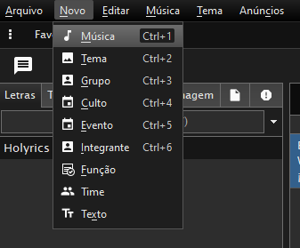Adicione o título e o artista nos campos no canto superior esquerdo.
Logo a baixo adicione a letra da música, ficando da seguinte maneira:
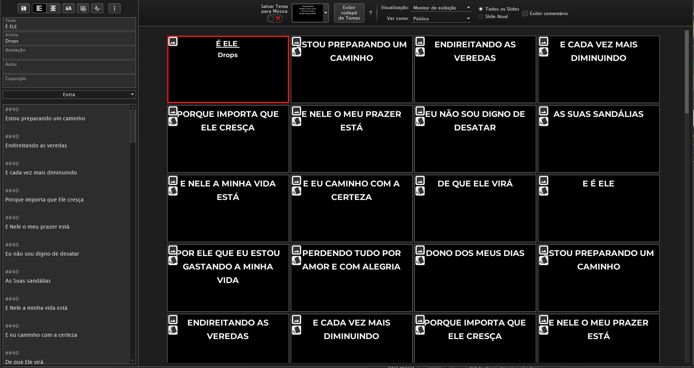Quando adicionar a letra configure para que na visualização dos slides fique com no máximo 2 linhas e antes de cada linha adicione o tamanho da fonte que é ##40
Agora para finalizar a as configurações da música selecione a música toda clique no 'aA' no canto superior esquerdo em cima do título e clique na opção 'O texto selecionado atualmente' em 'Maiúsculo'.
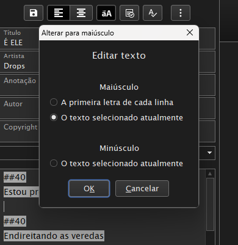Preparar para o Louvor
Para procurar as músicas que serão usadas no louvor vá na lateral esquerda na barra de pesquisa que digite o nome da música.
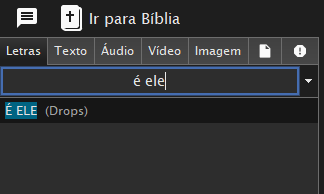Arraste a música desejada para a lateral direita na parte 'Letras'
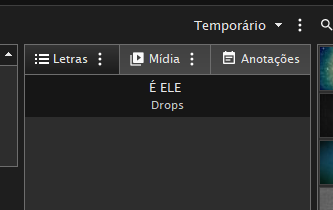Para rodar a letra no telão precione a tecla 'F5' ou clique no botão de PLAY em cima da letra.
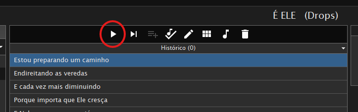Quando a letra está rodando ela fica em baixo, assim é só passar a letra clicando na seta para a direita para avançar ou a seta para a esquerda para voltar.
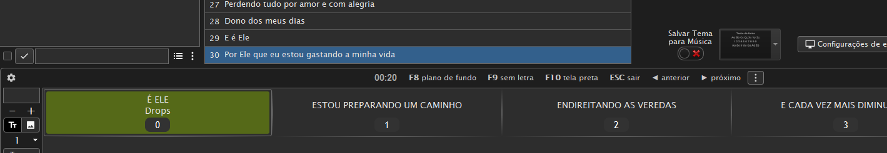Pode-se usar o mouse para passar a letra, basta clica no próximo slide.
Acessar Bíblia
para acessar a bíblia clique na opção 'Ir para Bíblia' no canto superior esquerdo em cima das músicas.
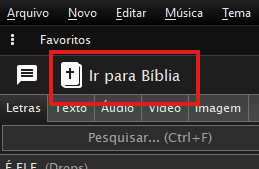A bíblia é assim:
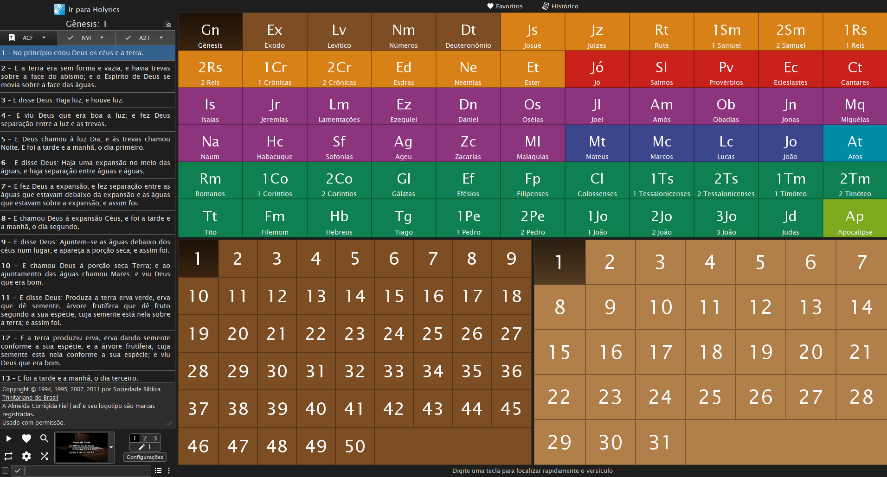Para pesquisar o versículo mais rápido basta apenas começar a digitar o nome do livro e o capítulo e versículo.
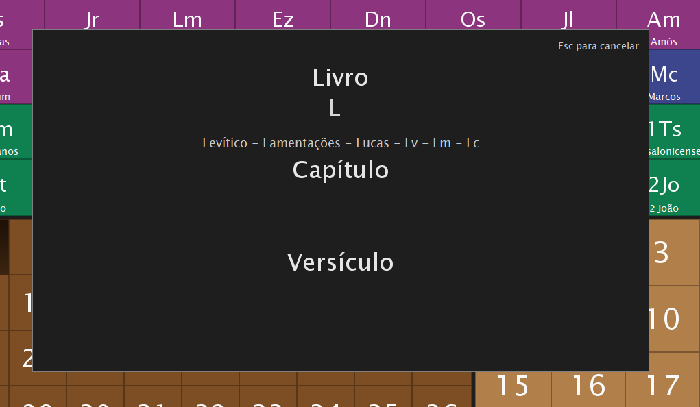Adicionar Mídias
Para adicionar qualquer tipo de mídia para poder projetar no telão basta mudar a aba da direita para 'Mídia' e arrastar o seu arquivo para essa aba.
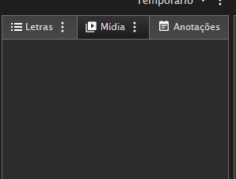